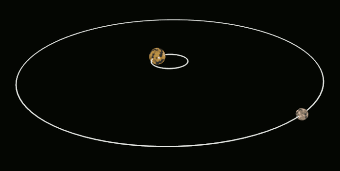
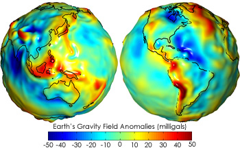

Dalam banyak-banyak benda yang wujud di muka bumi ini, perkara yang banyak mempengaruhi kehidupan kita adalah daya. Dalam banyak-banyak daya, daya graviti mungkin adalah yang paling dekat dengan kita sebab tanpa graviti kita tak ada atmosfera yang memberi kita oksigen dan akan berlaku benda-benda pelik yang lain seperti api yang berbentuk sfera, dan ros yang berbau pelik. Disebabkan kewujudan graviti yang berlaku setiap masa tanpa kesedaran kita juga, banyak salah faham boleh timbul. Inilah antara salah faham yang mungkin kalian percaya:
1) Matahari Menarik Bumi Lebih Banyak Daripada Bumi Menarik Matahari
Mungkin ini yang paling mudah untuk dipercayai kerana sifat Matahari yang berada di tengah sistem suria. Sebenarnya daya yang dikenakan oleh Bumi kepada Matahari sama dengan daya yang dikenakan oleh Matahari kepada Bumi (iaitu lebih kurang 3.52*1022N). Hal ini diteguhkan lagi dengan Hukum Gerakan Newton Ketiga “Akan ada daya yang berlawanan dan sama nilai untuk setiap daya yang dikenakan.” Cuba ambil tali dan seorang ambil satu hujung. Dua-dua akan rasa satu tarikan (tegangan tali) dan nilai tarikan itu sama.
Satu sebab je kenapa Matahari berada di tengah dan tak berpusing seperti Bumi iaitu sebab Matahari mempunyai jisim yang jauh lebih besar daripada Bumi (300,000 kali ganda). Jisim besar bermakna inersia (kebolehan untuk tak bergerak) pun besar. Malah, ada bukti yang Matahari ada bergerak sedikit disebabkan Musytari yang hanya 1000 kali ganda lebih kecil daripada Matahari. Tambahan pula, Pluto dan salah satu bulannya, Charon, mengelilingi sesama sendiri sebab jisimnya yang hampir sama (Pluto adalah 8 kali ganda Charon). Untuk buat perbandingan, Bumi adalah 80 kali ganda lebih berjisim daripada Bulan kita.

Orbit Pluto dan Charon (Imej Domain Awam)
{kind=link}
2) Objek Jatuh Ke Bumi dengan Halaju yang Sama Setiap Masa
Ramai tahu semua objek jatuh ke Bumi tapi ramai juga menganggap yang objek akan jatuh ke Bumi dengan halaju yang sama setiap masa. Setiap objek sebenarnya memecut ke arah Bumi setiap masa. Hal ini disebabkan sifat graviti sebagai daya. Daya adalah sesuatu yang mengubah arah dan nilai halaju sesuatu objek.
Untuk membuat demonstrasi ringkas sifat graviti sebagai daya, ambil apa-apa objek kemudian campak ke atas. Anda akan perasan yang objek itu akan berhenti bergerak ke atas dan akhirnya bergerak ke bawah. Setiap masa objek itu sedang memecut ke bawah disebabkan graviti. Pecutan yang bergerak ke arah berlawanan dengan arah halaju dipanggil nyahpecut. Kalau bola itu tak nyahpecut dan memecut, mana mungkin ia boleh mengubah arah.
Malah, formula untuk daya ialah jisim * pecutan. F=ma. Kalau tiada pecutan, kita hanya ada jisim dan tiada berat.
Pecutan objek ke arah Bumi sentiasa sama iaitu 9.81 ms-2 tidak kira jisim. Hal ini bermakna, halaju objek ke bawah akan meningkat 9.81 ms-1 setiap saat.
3) Objek yang Lebih Berat akan Jatuh ke Tanah Dahulu berbanding Objek yang Lebih Ringan
Kita mungkin mempercayai kenyataan itu sebab kita membandingkan penukul dengan bulu pelepah. Sudah tentu penukul akan jatuh ke Bumi dahulu berbanding bulu pelepah, sebabnya bulu pelepah banyak dipengaruhi oleh rintangan udara. Jika tiada rintangan udara (vakuum), kedua-duanya akan jatuh dalam masa yang sama.
Ini eksperimen di Bulan.
Lihatlah juga eksperimen di Bumi dalam bilik vakuum.
4) Daya Graviti adalah Sama Di Setiap Permukaan Bumi
Perkara ini betul kalau bumi adalah sfera yang sempurna. Malangnya, Bumi mempunyai bukit-bukau dan gunung-ganang. Maknanya, permukaan Bumi mempunyai ketinggian yang berbeza-beza. Graviti akan makin lemah kalau jarak antara pusat dua jisim makin jauh. Maknanya manusia yang berada di paras laut adalah lebih berat berbanding manusia yang sama jisimnya yang berada di puncak Gunung Everest walaupun tak begitu ketara.

Daya graviti Bumi yang diukur oleh satelit kembar GRACE. Merah maknanya kuat dan Biru maknanya lemah. - Ihsan Wikipedia
5) Hanya Objek di Angkasa Sahaja yang Mempunyai Graviti
Senang untuk kita membuat tanggapan begini sebab kita tak rasakan daya graviti antara dua manusia. Hakikatnya, setiap benda yang berjisim akan mempunyai graviti tersendiri. Itulah apa yang dikatakan oleh Newton dalam Hukum Graviti Alam Semesta.
Malangnya, tak mampulah kita berlagak macam Magneto dengan kawan kita sebab daya tarikan antara dua manusia berjisim 70 kg dalam jarak 2 m hanyalah 3.27*10-7 N yang sama macam tak ada apa-apa. Paling tak pun, bolehlah jadikan pick-up line. #chiachiachia